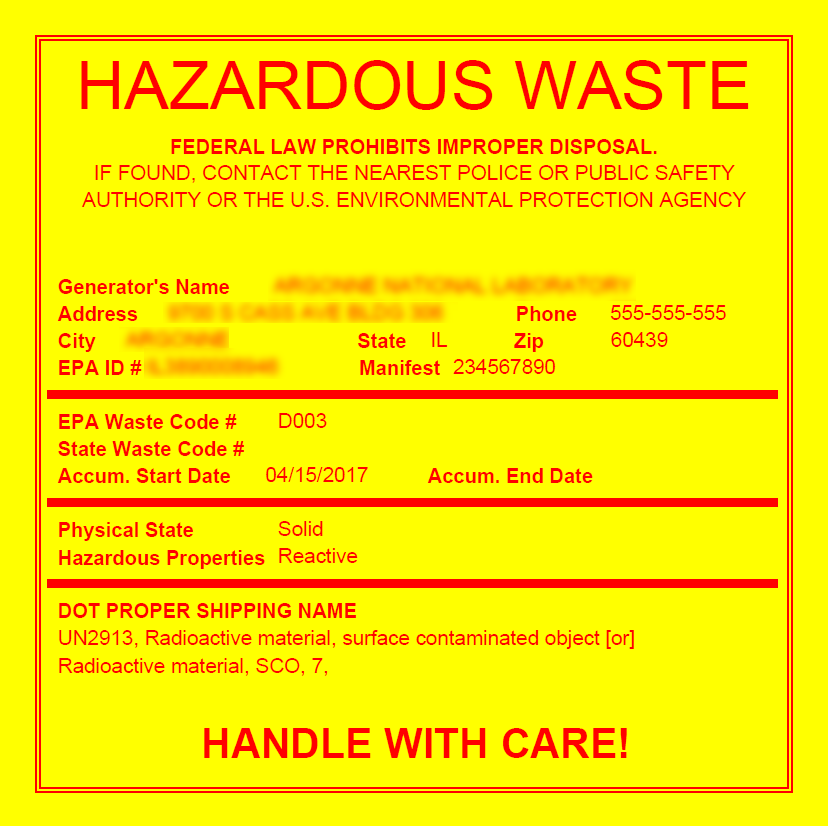

To print a label for a waste record:
In the Environmental menu, click Waste Management.
Use the Site Selector (at the top of the Environmental menu) to view just the records related to a particular GDDLOFB node.
Open the waste record that you want to generate a label for.
Choose Actions»Print Waste Label.
If there is more than one container record associated with the waste record, the Print Waste Label action is disabled in the waste record and labels must be generated from the individual container records.
Select the Label Type (e.g. Hazardous, Pending Analysis, etc.).
Select the appropriate Legal Notice (selectable options depend on the Label Type chosen), or select Custom and enter Custom Notice text.
The label formatting (Background, Font, Frame, Size) may be determined based on the Label Type chosen; make different selections if required, or click Export (to Word or RTF) to make further modifications to the formatting.
Click Report to view or print the label.
Data from the waste record is included on the label:
